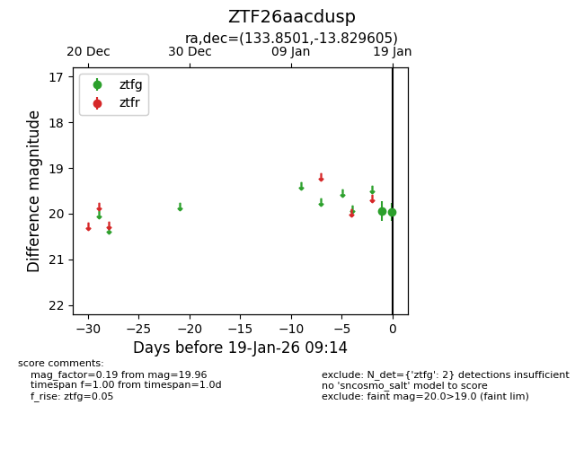
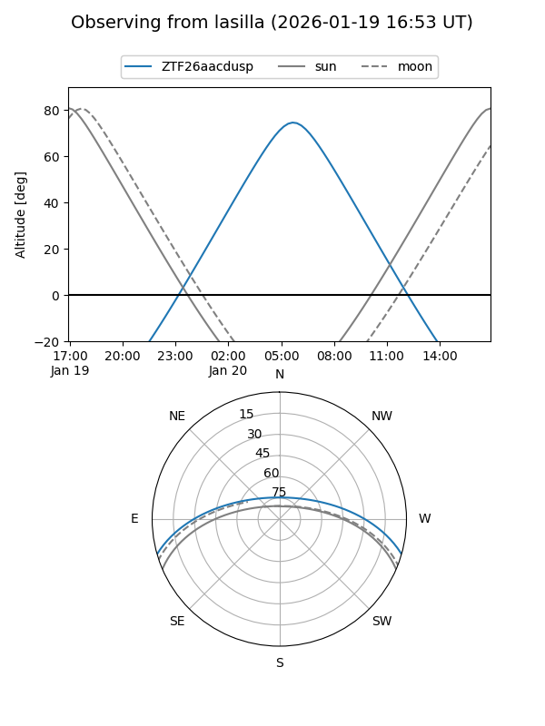
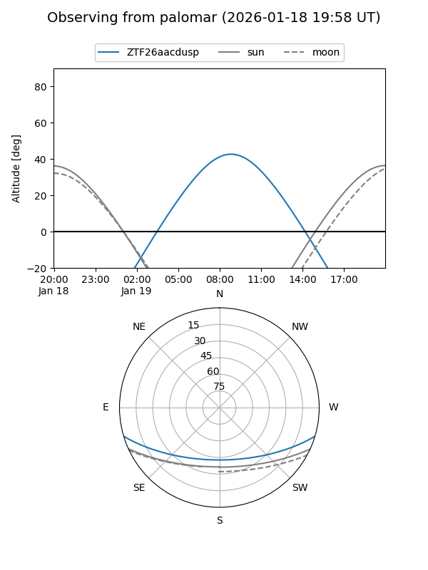

ZTF26aacdusp
Target ZTF26aacdusp at 2026-01-19 09:16
Aliases and brokers:
FINK: link
Lasair: link
ALeRCE: link
alt names
ZTF26aacdusp (ztf,fink_ztf)
Coordinates:
equatorial (ra, dec) = 133.8501,-13.82961
equatorial (HMS+DMS) = 08:55:24.04,-13:49:46.58
galactic (l, b) = (240.8311,+19.63171)
Flags:
Photometry:
last ztfg=19.96
2 ztfg detections
Lightcurve

Visibility


Additional plots